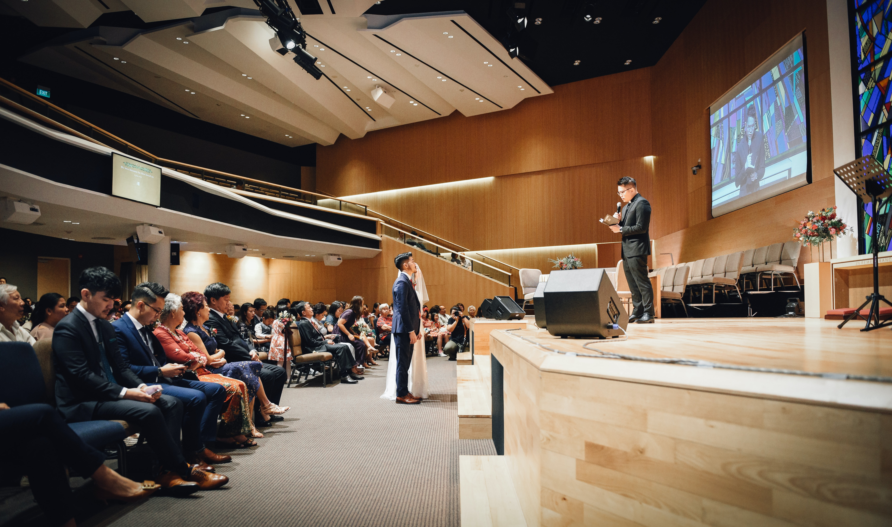

-

Selamat datang di Web SMPN 8!
We create our future!
-

Inovasi SMPN 8
SMPN 8 Cetuskan perpustakaan online
-

Tata Ruang Kelas
Kelas yang nyaman memotivasi siswa untuk belajar.
-

Perbaikan Fasilitas
Perbaikan kelas dilakukan agar siswa lebih nyaman.